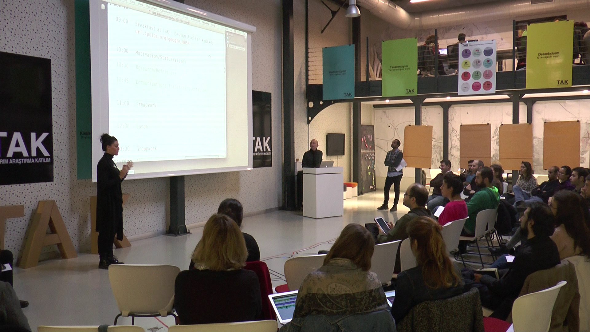
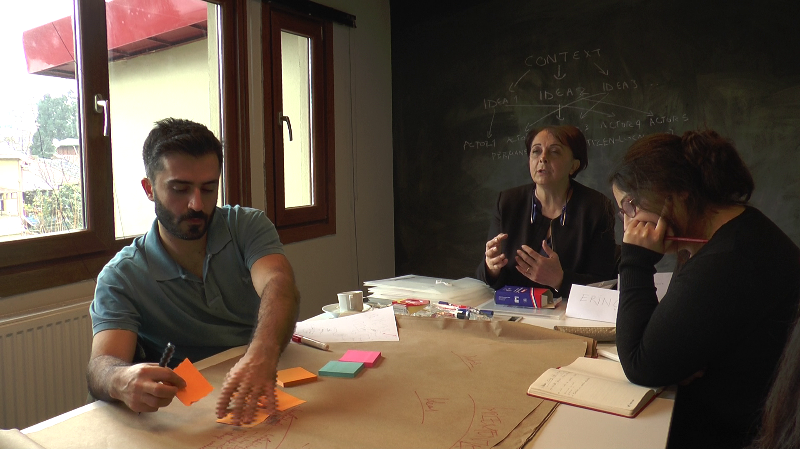
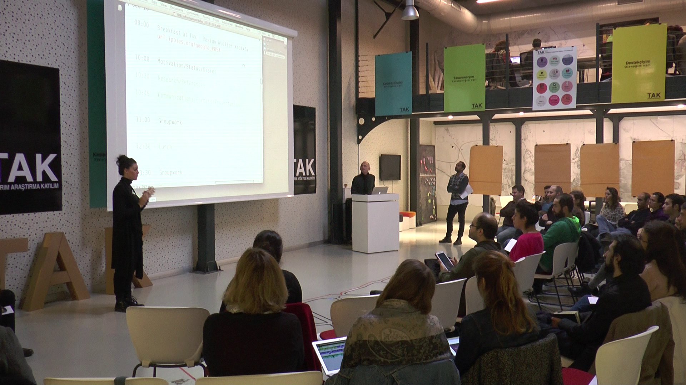
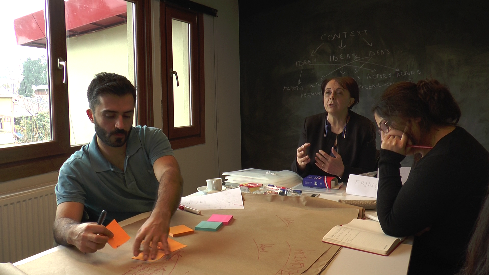
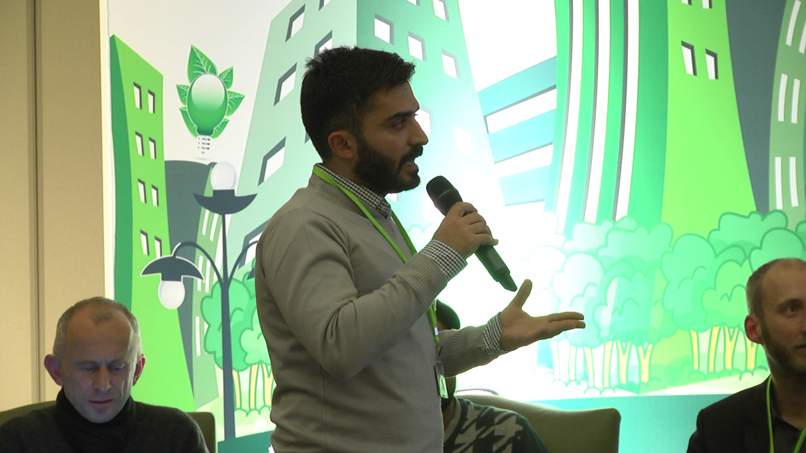
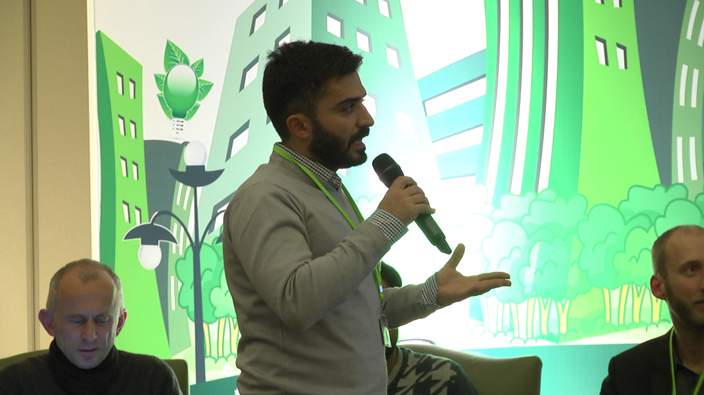

Space Across Scales
Spatial Analysis and Design Research | Harun Ekinoglu
Governance and Local Administration/Feasibility and Implementation | Workshop
(sub-event of Istanbul Design Biennial)

 



 

Following the Istanbul Design Biennial's call of making propositions that initiate, support and facilitate local interventions for developing the future Istanbul as Smart City, various collaborators proposed a visible Urban Manifest firmly anchored in the city's neighborhoods: a mesh of interconnected local Information Hubs at strategically selected public locations. Hubs offer free public Wi-Fi connection in a narrow range. They collect information provided by people, narrowcast context-relevant information, and also generate income by leasing space for commercial and non-commercial purposes. Hubs reinforce a sense of community for locals, act as landmarks/meeting-points for non-locals, and are highly exposed markers for the city's identity and brand-building strategy. HUBs are catalysts for urban planning and development, producing physical evidence and arguments of feasibility for the future Istanbul
- The collaborators invited young creators, business developers, communal activists, and local government strategists to explore three different views on Istanbul Smart City Information Hubs in a one-day workshop.
- In small teams, directed by local and international experts, participants reviewed current developments in world-cities and engage in local research to produce three micro manifestos to be presented and discussed in a follow-up Panel.
- In the workshop I facilitated a 2 days Workshop of “Governance and Local Administration / Feasibility and Implementation.”
Workshop Team 3: Governance and Local Administration / Feasibility and Implementation
- how to take advantage of specific local conditions
- what is the scope of administrative involvement
- how to maintain, update, extend physical infrastructure and systems
Participants: professional engineers, system developers , IT/telecom/urban furniture corporations, representatives of city administration
Detail of the workshop can be found here
Copyright @ Harun Ekinoglu 2017